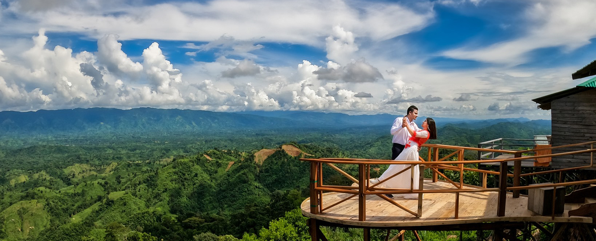
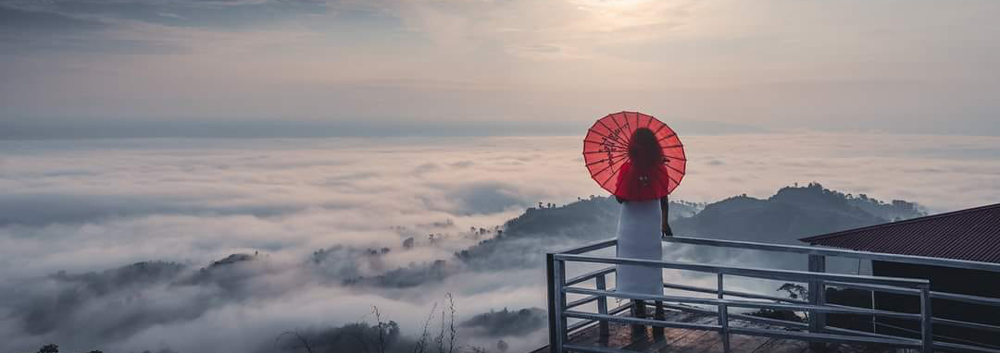
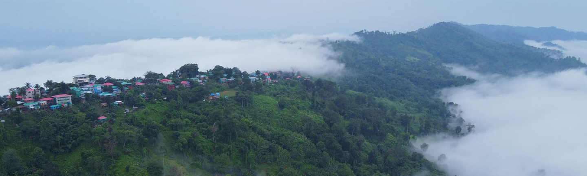
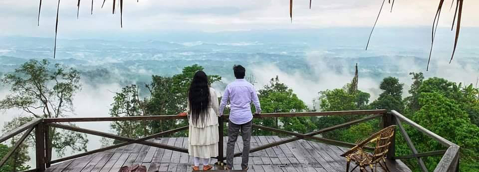
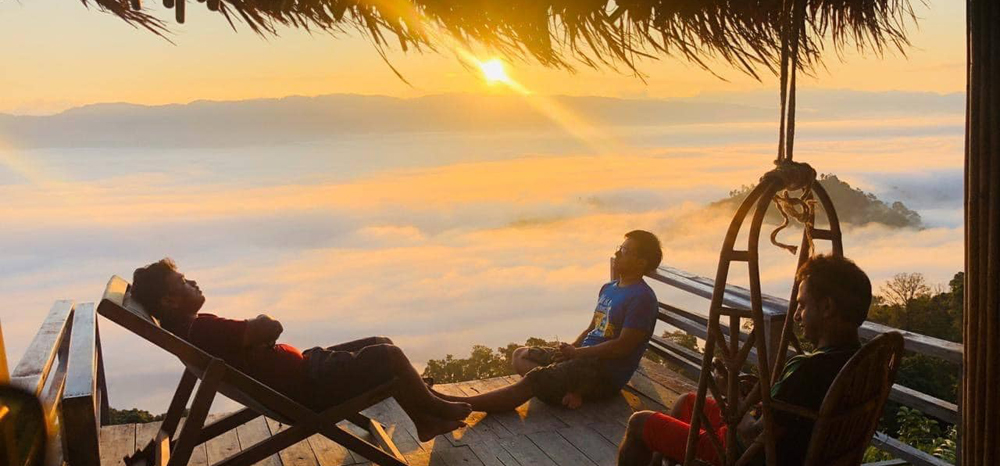

‘সাজেক ভ্যালি’ সমুদ্রতল থেকে প্রায় ১৮০০ ফুট উচ্চতায় পাহাড় ও ঘন বন দ্বারা পরিবেষ্ঠিত পার্বত্য চট্টগ্রামের উত্তরে রাঙ্গামাটি জেলার বাঘাইছড়ি উপজেলার একটি ইউনিয়ন যা তার প্রাকৃতিক সৌন্দর্যের জন্য বিখ্যাত। সূর্যোদয়, সূর্যাস্ত, বৃষ্টি আর মেঘের ভেলার উপভোগের জন্য এর চেয়ে চমৎকার স্থান বাংলাদেশে আর নেই এবং পাহাড় ঘেরা সাজেকের আঁকাবাঁকা, উচু-নিচু রাস্তাটি বাংলাদেশের অন্যতম সুন্দর পথ হিসেবেও সুপরিচিত।

‘সাজেক ভ্যালি’ আসা মাত্রই মনে হবে এ যেনো সৃষ্টিকর্তার এক অপূরূপ সৃষ্টি, যেখানে আকাশের নীল ও প্রকৃতির সবুজ মিলে যেন ভিন্ন এক জগতের সৃষ্টি হয়েছে। সাথে ‘সাজেক ভ্যালী’র অপরূপ রিসোর্ট গুলোতে বসে পাহাড় আর মেঘের খেলা দেখতে কার না ভাল লাগে?

Sajek Valley is one of the most beautiful places in the country, whether it is the queen of the mountains or the paradise of clouds. Yes, imagine you are standing on a hill 1800 feet high.

Clouds are moving around. You can’t even see objects in the distance behind the clouds. Sometimes coming very close and touching the clouds is an increasing feeling.

Dhaka to Sajek Distance: 335 KM. Rangamati to Sajek Distance: 135 KM. Chittagong to Sajek Distance: 176 KM.

Resort in Sajek Valley: Their are some best resort in Sajek Valley. We are athourized booking agent of best resort in Sajek Valley.
❑ ভ্রমণ সময়ঃ ২ দিন - ৩ রাত (বাস জার্নি ২ রাত)।
*** আমাদের প্রতি বৃহস্পতিবার রাতে ঢাকা থেকে ট্যুর প্যাকেজ রয়েছে। রিগুলার প্যাকেজঃ 6,500/- টাকা প্রতিজন (শুক্রবার + শনিবার) - ২ দিন, ১ রাত। ***
❑ কাপল প্যাকেজঃ 14,000-18,000/- টাকা (২ জনের জন্য)।
❑ প্যাকেজ ০১ঃ 8,000/- টাকা প্রতিজন (৬ জনের গ্রুপ)।
❑ প্যাকেজ ০২ঃ 7,000/-- টাকা প্রতিজন (৮ জনের গ্রুপ)।
❑ প্যাকেজ ০৩ঃ 6,500/- টাকা প্রতিজন (১২ জনের গ্রুপ)।
❑ এসি বিজনেস ক্লাস বাসের জন্য 1,700/- টাকা অতিরিক্ত যোগ করতে হবে।
***কোন হিডেন চার্জ নেই।***
সাজেক ভ্যালি - রুংলুই পাড়া
ঝাড়ভোজ
কংলাক পাড়া
স্টোন গার্ডেন
আলুটিলা গুহা
ঝুলন্ত ব্রিজ
তারেং হেলিপ্যাড
রিসাং ঝর্ণা